Sobre a Invernada Juvenil
A Invernada Juvenil do CTG Rancho da Saudade é composta por jovens entre 14 e 17 anos, apaixonados pela cultura gaúcha. Com ensaios regulares, vivências culturais e apresentações marcantes, representamos Cachoeirinha/RS com orgulho e dedicação.
Nossa História
Fundado em 1981, o CTG Rancho da Saudade é referência estadual em tradição gaúcha. A invernada juvenil surgiu com o propósito de formar jovens talentos, promovendo o amor pelo tradicionalismo desde cedo. Já conquistamos diversos títulos, com destaque para:
| Ano | Conquista | Temática |
|---|---|---|
| 2017 | Primeira vitória no JuvEnart | IRGA, vida que brota da terra |
| 2019 | Bicampeões estaduais | As cavalhadas |
| 2023 | Tricampeões estaduais | Homenagem a Os Serranos |
| 2024 | Bicampeonao consecutivo | Tributo ao filme “Para Pedro” e à memória do gaúcho antigo |
Instrutores e Coordenação
Marcela Coelho e Nyckollas Ourique
Instrutores da invernada juvenil
Daniella Gomes e Fabio Luciano
Coordenadores da invernada
Guilherme Chula e Caroline Leite
Coreógrafos
Galeria de Eventos
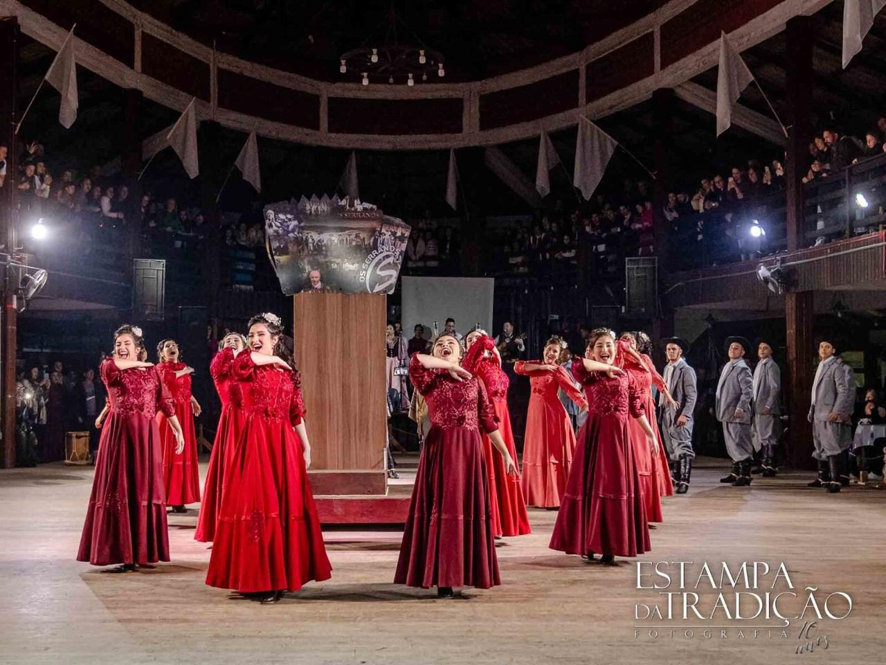
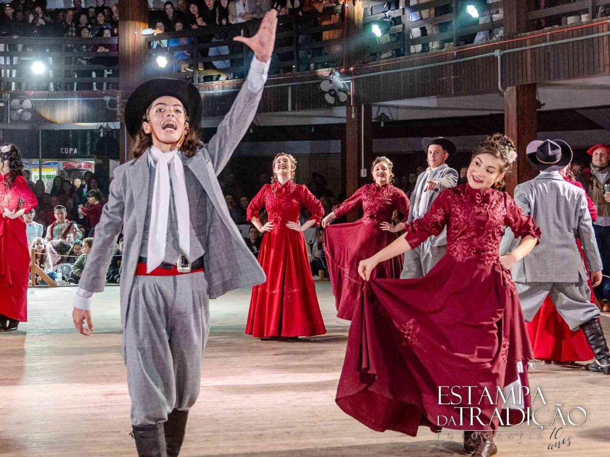
 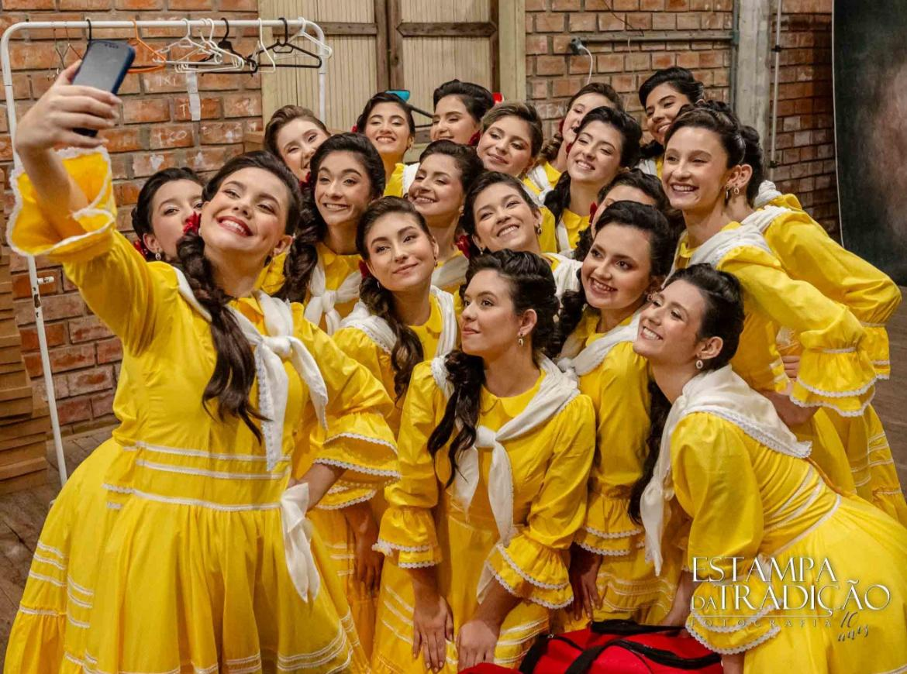
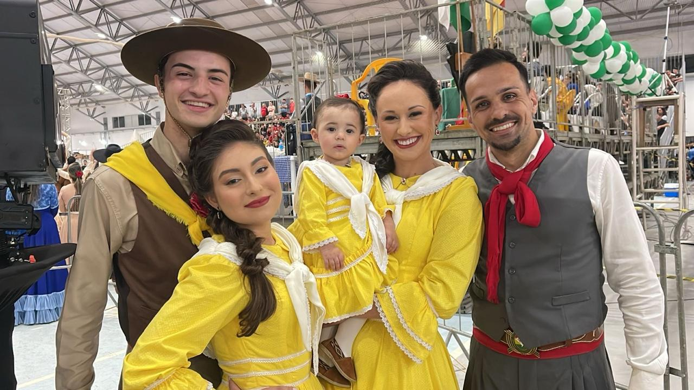
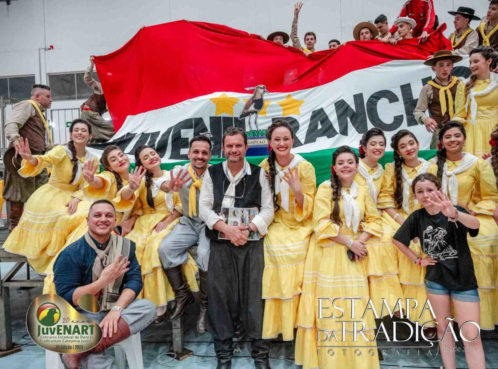
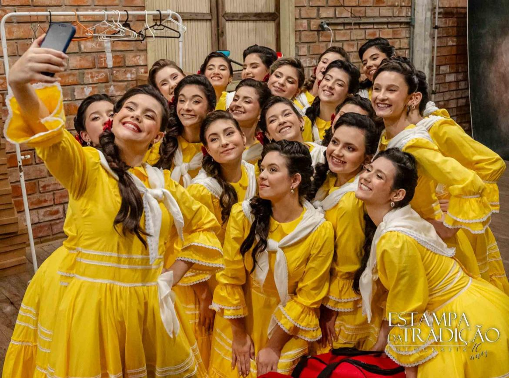
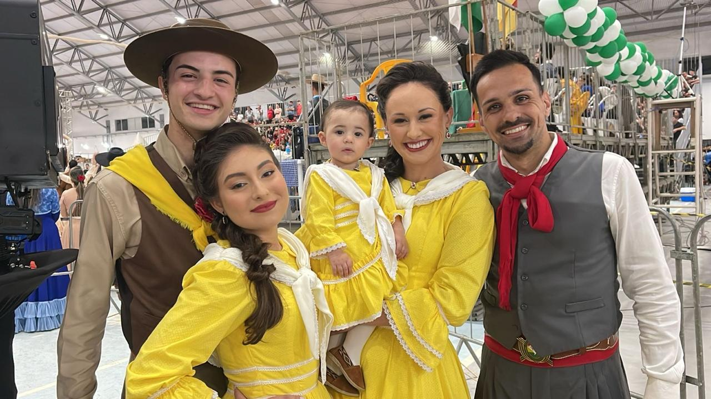
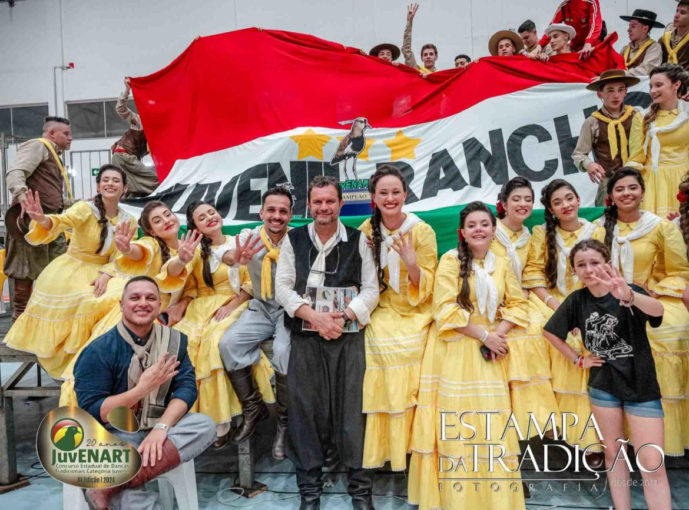
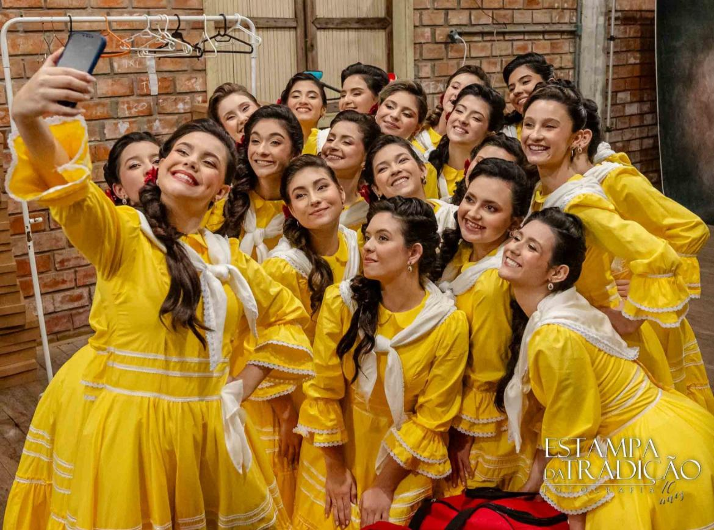
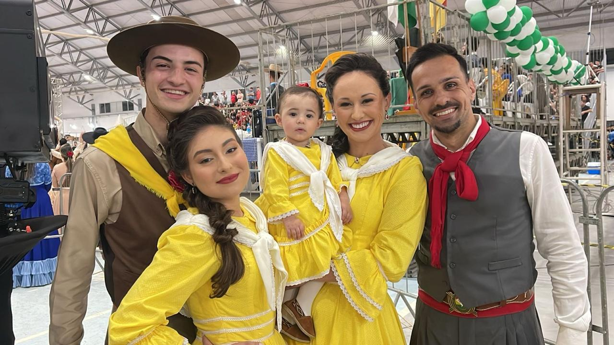
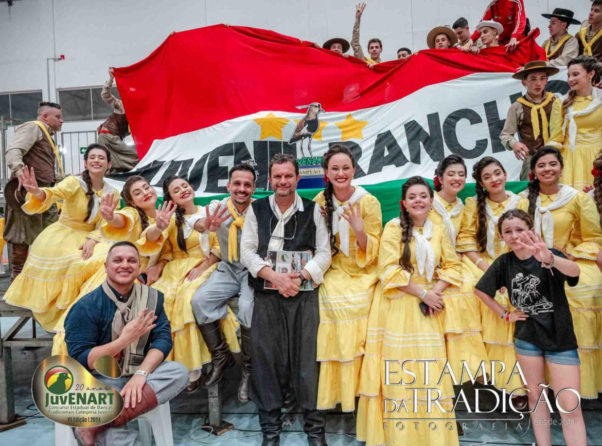
Depoimentos
“Participar da invernada mudou minha vida. Aprendi sobre cultura, respeito e fiz amizades para sempre.”
“É emocionante ver nossos filhos no palco. O CTG Rancho da Saudade é uma segunda família.”
Inscrição
Formulário de Inscrição - Invernada Juvenil
Contate-nos
Estamos à disposição para dúvidas, eventos e inscrições:
Email: contato@ctgrancho.com
WhatsApp: +55 (51) 98422-3779
Localização: Ritter, 2626 | Cachoeirinha, Rio Grande do Sul